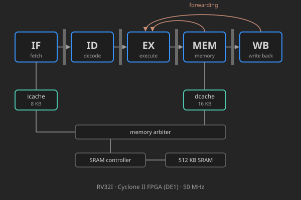

Personal project - 2026 - GitHub

A 5-stage, in-order RISC-V (RV32I) processor written in Verilog. It runs at 50 MHz on the Cyclone II FPGA of an Altera DE1 board, with an 8 KB instruction cache and a 16 KB data cache in front of the board's 512 KB SRAM. Every design change is checked against a Python reference model with directed, random and unit testbenches before it goes on the board.
| ISA | RV32I (no CSRs, traps or interrupts) |
| Pipeline | IF, ID, EX, MEM, WB, in order |
| Clock | 50 MHz, Fmax about 52–54 MHz |
| Caches | 8 KB icache + 16 KB dcache, direct mapped, 16-byte lines |
| FPGA use | ~6,300 of 18,752 logic elements, all 52 M4K RAM blocks |
Most data hazards are handled without stalling. Results are forwarded from MEM or WB straight into EX, and the register file writes through so an instruction in ID sees a value being written back in the same cycle. The only stall is a load followed immediately by an instruction that uses the loaded value.
| Hazard | Handled by | Cost |
|---|---|---|
| ALU result used by the next instruction | Forwarding from MEM or WB into EX | 0 cycles |
| Load result used by the next instruction | Load-use interlock | 1 cycle |
| Store right after the load that produces its data | Load-to-store forwarding in MEM | 0 cycles |
Branch mispredict or jalr | Redirect from EX | 1 cycle |
Branches are predicted in ID with 32 two-bit saturating counters, so a correctly predicted taken branch costs nothing. Predicting in ID instead of IF keeps the predictor off the critical path into the next fetch address.
A dcache miss costs about 42 cycles, or about 85 if a dirty line has to be written back first.
The critical path runs from load data leaving the dcache, through forwarding and the branch comparator,
to the next fetch address. Adding the caches pushed it past the 20 ns clock period. Two changes brought it back under:
computing the next PC for both branch outcomes in parallel and choosing between them at the last mux, and
giving jalr its own adder instead of waiting on the ALU.
Each test program runs on both the RTL and an independent RV32I reference model written in Python. The runner compares the trace of retired instructions one by one, the final registers and memory, and the exact number of stalls and flushes, so a pipeline that stalls when it doesn't need to still fails. The tests include:
An insertion sort of 64 words, in simulation of the board at 50 MHz:
| Instructions retired | Cycles | CPI | Load-use stalls | Flushes | dcache misses |
|---|---|---|---|---|---|
| 25,276 | 28,564 | 1.13 | 1,044 | 1,568 | 16 |
Before the caches were added, the board matched the simulation on every counter. The cached version has passed simulation and timing and is waiting on its first comparison on the board.
Verilog, Icarus Verilog, Quartus II 13.0sp1, RISC-V GCC, Python, Tcl.